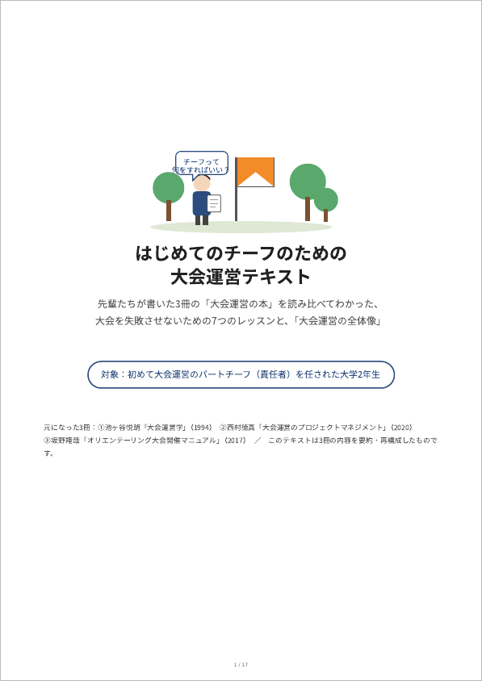

大会運営を考える ── 3つの文書の読み比べ
オリエンテーリングの大会運営について、異なる時代に、異なる立場の三人が書いた文書がある。1994年の『大会運営学』（池ヶ谷悦朗）、2020年の『大会運営のプロジェクトマネジメント』（西村徳真）、2017年の『オリエンテーリング大会開催マニュアル』（坂野翔哉）。この三つを読み比べると、書き方も守備範囲もまるで違うのに、大会運営の「変わらない部分」については驚くほど同じことを言っている。ここには、その読み比べの結果をまとめた二つの文書を置く。初めてパートチーフを任された人は、まず上のテキストから。

はじめてのチーフのための大会運営テキスト
3冊の読み比べでわかった、大会を失敗させないための7つのレッスンと「大会運営の全体像」
初めて大会運営のパートチーフ（責任者）を任された大学2年生に向けて、下の比較レポートをやさしく組み直したイラスト入りのテキスト。7つのレッスンと「パートチーフならこうする」の具体行動、3冊の使い分け早見表、工程に沿った1年の流れ、チェックリスト、用語のミニ辞典を収める。
PDFを開く（A4・17ページ）オリエンテーリング大会運営論 三文書比較
共通する点と、それぞれの特長・ユニークな点
三つの文書の素性、九つの共通点（準備で決まる、発表した情報は変えない、責任を一意にする、部署間の接点を設計する、進捗と品質を定期検査する、記録して引き継ぐ、実行委員長は理念を掲げる、地元と渉外、工学の考え方）、それぞれの得意技、観点別の対照表、そして三つを読み合わせて見えることを論じたレポート。『人月の神話』との意外なつながりにも触れている。
PDFを開く（A4・10ページ）元になった三つの文書
- 池ヶ谷悦朗『大会運営学──大会を開き、育てる法』O-Japan 1994年7月号〜12月号連載 本サイトに全文掲載（第4部は未公開）
- 西村徳真『大会運営のプロジェクトマネジメント』2020年度京都府オリエンテーリング協会 生涯スポーツ指導者研修会資料 nishipro.com
- 坂野翔哉『開催判断・事前準備・当日運営 オリエンテーリング大会開催マニュアル』坂野山遊地図企画、2017年初版・2018年改訂（2026年9月10日現在、こちらで公開されている。ただし、このorienteering.comサーバーは2026年9月末までに運用を終了することが決まっている）
『オリエンテーリング大会開催マニュアル』からの引用・要約は、著者坂野翔哉氏の了解を得ている（2026年9月）。二つの文書はAI(Fable 5.1)が生成した。誤りや気づいた点があれば、お知らせいただければ幸いである。